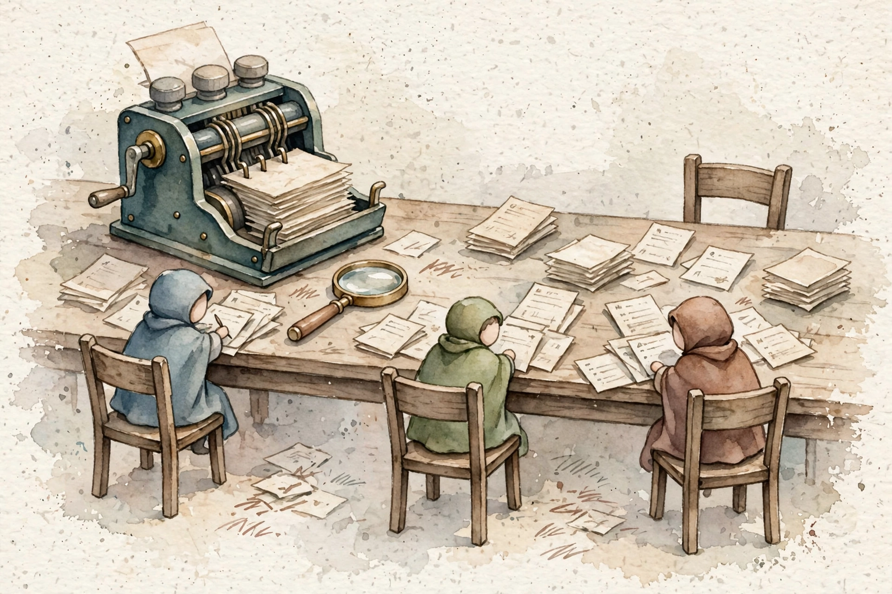

AWS Certified Generative AI Developer — Professional
Proof, then repair
Domain 5 asks two things: prove the app works, and fix the app at a fault. This companion walks the full volume in source order: automatic scores, judge models, human review, RAG scores, eval loops, A/B tests, failure signatures, grounding control, red-team work, and gated deploys.
Read inward. The claim is the outer shell. Under it: the mechanism, the numbers, a worked scenario, and the exam trap.
Outer layer Claim
Start here
Companion · AIP-C01 Domain 5 · Testing, Validation, and Troubleshooting
Retrieval-augmented generation keeps facts outside the weights. The model answers from chunks it can cite.
Original diagram. The flow follows Amazon Bedrock Knowledge Bases: ingest, chunk, embed, retrieve, generate.
Ingestion loads documents from a source such as S3.
Chunking splits them. The strategy is fixed on the data source.
One embedding model writes vectors into a store.
A query embeds with the same model and fetches near chunks.
The model answers from those chunks and returns citations.
Mechanism
Companion · AIP-C01 Domain 5 · Testing, Validation, and Troubleshooting
Domain 5 asks two things: prove the app works, and fix the app at a fault. This companion walks the full volume in source order: automatic scores, judge models, human review, RAG scores, eval loops, A/B tests, failure signatures, grounding control, red-team work, and gated deploys.
Companion to the AIP-C01 Domain 5 volume in the AWS AIP-C01 study guide. No transcript exists. The page narrates the lesson volume and the study plan for the volume.
SOURCE / INTERPRETATION: HOW TO READ THE TAGS
From the lesson SOURCE: the idea, and every number beside it, comes from the cited section of the source. The phrasing is the companion's.
Illustration INTERPRETATION: invented by the companion: an analogy, a toy with made-up values, or a what-if. Never source content.
companion INTERPRETATION: companion voice: the idea above the tag is from the source. The generalization below it is the companion's.
Unit 1 · Orientation
Numbers and limits
Volatile. Quotas, model IDs, and prices move. The prose below was checked against AWS documentation on 2026-09-28. Re-check any quota or price before exam day.
This section states no service quota. Do not memorize a number the text does not give you.
Worked scenario
Work “Start here” against one stem. Name the constraint (freshness, citation, latency, a cost ceiling, or a control that must block) and pick the smallest managed mechanism that meets every constraint.
Exam trap
Illustration INTERPRETATION: invented by the companion: an analogy, a toy with made-up values, or a what-if.
Outer layer Claim
Domain 5, the evaluation matrix, and how AWS asks
The domain in one paragraph. Domain 5 covers testing, validation, and troubleshooting. The domain holds about 7 of the 65 scored questions on the exam.
The proof workshop
Watercolor: The proof workshop. Original AI watercolor illustration made for this page.
The proof workshop
Mechanism
From the lesson Intro sections
The domain in one paragraph. Domain 5 covers testing, validation, and troubleshooting. The domain holds about 7 of the 65 scored questions on the exam. One question sits under most items. How does a team prove a GenAI app works, and how does a team fix the app at a fault?
What AWS actually tests (the evaluation matrix). The matrix maps each evaluation method to the trait the method measures. Automatic metrics check accuracy, stability, and toxicity against ground truth labels. A judge model checks quality traits at scale. Human review checks the traits no scorer can judge. Task 5.1 rests on this matrix.
How AWS asks this domain. Items hide a team case. No item asks a bare definition. A golden dataset is a fixed set of trusted prompts for reruns after each change. A canary release sends a small traffic share to a new version before full rollout. The evaluation facts in this volume rest on a check against live AWS documents on 2026-09-28, per the source volume.
7 of 65 scored questions sit in Domain 5 Nugget 1 · A small domain with a sharp trap set From the lesson Intro The lesson Domain 5 holds about 7 of 65 scored questions, and each item hides a team case. Why it matters. Seven questions punish one habit: debug of a GenAI app as a classic app. The wrong options all share that habit. Transfer. Learn the GenAI debug order by heart. The domain is small and the order repeats. UNIT 01 · AIP-C01
Unit 2 · Topic 1
Numbers and limits
Volatile. Quotas, model IDs, and prices move. The prose below was checked against AWS documentation on 2026-09-28. Re-check any quota or price before exam day.
This section states no service quota. Do not memorize a number the text does not give you.
Worked scenario
Work “Domain 5, the evaluation matrix, and how AWS asks” against one stem. Name the constraint (freshness, citation, latency, a cost ceiling, or a control that must block) and pick the smallest managed mechanism that meets every constraint.
Exam trap
7 of 65 scored questions sit in Domain 5 Nugget 1 · A small domain with a sharp trap set From the lesson Intro The lesson Domain 5 holds about 7 of 65 scored questions, and each item hides a team case.
Outer layer Claim
1. Why testing generative AI is different
A classic test asserts one exact output for one input. A model call gives many valid outputs with variable words.
Spend follows tokens and the capacity you reserve. Cut tokens before you buy throughput.
Original diagram. Prices and provisioned-throughput terms change. Confirm them on the official pricing and quotas pages.
Shorten the prompt and the retrieved context first.
Cache a repeated prefix when the provider supports prompt caching.
Route easy turns to a cheaper model. Escalate the hard ones.
Batch the work that nobody is waiting on.
Buy provisioned throughput only for a proven steady load, and call the provisioned ARN.
Mechanism
From the lesson Topic 1
A classic test asserts one exact output for one input. A model call gives many valid outputs with variable words. An exact-match test fails open-ended output at a high rate and proves little. An eval is the unit of measure here. An eval has three parts: a prompt dataset, a run, and a score step.
Ground truth is the known-correct answer per prompt. Temperature controls randomness and word choice. Temperature never controls correctness. Temperature is never a cost control.
Questions for this topic test the fit of test style to output type. A checkout total that must match to the cent is a deterministic case. A summary with many valid forms is an eval case.
Unit 3 · Topic 2
Numbers and limits
Volatile. Quotas, model IDs, and prices move. The prose below was checked against AWS documentation on 2026-09-28. Re-check any quota or price before exam day.
This section states no service quota. Do not memorize a number the text does not give you.
Worked scenario
Work “1. Why testing generative AI is different” against one stem. Name the constraint (freshness, citation, latency, a cost ceiling, or a control that must block) and pick the smallest managed mechanism that meets every constraint.
Exam trap
Ground truth is the known-correct answer per prompt. Temperature controls randomness and word choice.
Outer layer Claim
2. Automatic (programmatic) evaluation in Bedrock
Automatic evaluation is deterministic scoring against known answers. Automatic evaluation is the cheap fast mode in Bedrock.
Spend follows tokens and the capacity you reserve. Cut tokens before you buy throughput.
Original diagram. Prices and provisioned-throughput terms change. Confirm them on the official pricing and quotas pages.
Shorten the prompt and the retrieved context first.
Cache a repeated prefix when the provider supports prompt caching.
Route easy turns to a cheaper model. Escalate the hard ones.
Batch the work that nobody is waiting on.
Buy provisioned throughput only for a proven steady load, and call the provisioned ARN.
Mechanism
From the lesson Topic 2
Automatic evaluation is deterministic scoring against known answers. Automatic evaluation is the cheap fast mode in Bedrock. Code computes metrics with no human and no judge model. The CreateEvaluationJob API starts a job. A job needs four inputs: the model under test, a prompt dataset in S3 as JSONL, an output S3 path, and a setup that names the metrics. Built-in metrics cover accuracy, stability under the console name robustness, and toxicity.
The lesson case scores a 1,000-prompt ticket classifier at 0.93 accuracy. The score means 930 of 1,000 outputs match the ground truth label. The job costs a few dollars at most and ends in minutes. A pipeline can use the score as a regression gate. A score drop stops a deploy.
Automatic scores cannot judge brand voice, style, or helpfulness. A subjective trait needs a judge model or human review. Questions for this topic test metric choice per trait.
0.93 accuracy on the 1,000-prompt classifier case Nugget 2 · Labels make the cheap test run From the lesson Topic 2 The lesson Automatic evaluation needs ground truth labels, and the 1,000-prompt case scores 0.93 accuracy at a cost of a few dollars. Why it matters. No labels means no accuracy score. Teams that skip label work lose the cheapest gate in the pipeline. Transfer. Build a labeled set early. The set powers selection, regression gates, and drift checks. UNIT 02 · AIP-C01
Unit 4 · Topic 3
Numbers and limits
Volatile. Quotas, model IDs, and prices move. The prose below was checked against AWS documentation on 2026-09-28. Re-check any quota or price before exam day.
The lesson case scores a 1,000-prompt ticket classifier at 0.93 accuracy. The score means 930 of 1,000 outputs match the ground truth label.
Worked scenario
Work “2. Automatic (programmatic) evaluation in Bedrock” against one stem. Name the constraint (freshness, citation, latency, a cost ceiling, or a control that must block) and pick the smallest managed mechanism that meets every constraint.
Exam trap
Exam trap: a real service used for the wrong job, or a heavier ladder rung than the stem requires. Match the verb in the stem — cite, act, block, cheapen, or measure — to one mechanism here.
Outer layer Claim
3. Bring-your-own datasets and choosing metrics
Your prompts, the right metric. BYO means bring-your-own dataset. A team supplies prompts as JSONL in S3.
Retrieval-augmented generation keeps facts outside the weights. The model answers from chunks it can cite.
Original diagram. The flow follows Amazon Bedrock Knowledge Bases: ingest, chunk, embed, retrieve, generate.
Ingestion loads documents from a source such as S3.
Chunking splits them. The strategy is fixed on the data source.
One embedding model writes vectors into a store.
A query embeds with the same model and fetches near chunks.
The model answers from those chunks and returns citations.
Mechanism
From the lesson Topic 3
Your prompts, the right metric. BYO means bring-your-own dataset. A team supplies prompts as JSONL in S3. BYOI means bring-your-own inference. A team supplies prompts plus responses from any system: a model outside Bedrock, a full RAG pipeline, an agent with tools, or replayed production output. BYOI trains no model.
Metric choice turns on class balance. Accuracy lies on skewed data. The lesson ticket case scores 950 of 1,000 correct, and the urgent class F1 is 0.44. Precision counts the share of items with a label that truly hold the label. Recall counts the share of true items that earn the label. F1 is the harmonic mean of precision and recall. A fraud case with 1 percent fraud needs F1 or precision and recall, never accuracy alone. ROUGE scores summary overlap with a reference text.
Questions for this topic pair a data shape with a metric. Skew pairs with F1. Summary pairs with ROUGE.
Unit 5 · Topic 4
Numbers and limits
Volatile. Quotas, model IDs, and prices move. The prose below was checked against AWS documentation on 2026-09-28. Re-check any quota or price before exam day.
This section states no service quota. Do not memorize a number the text does not give you.
Worked scenario
Work “3. Bring-your-own datasets and choosing metrics” against one stem. Name the constraint (freshness, citation, latency, a cost ceiling, or a control that must block) and pick the smallest managed mechanism that meets every constraint.
Exam trap
Metric choice turns on class balance. Accuracy lies on skewed data. The lesson ticket case scores 950 of 1,000 correct, and the urgent class F1 is 0.44.
Outer layer Claim
4. LLM-as-a-judge evaluation
A second model grades the first. A judge model scores output against a rubric a team defines.
Spend follows tokens and the capacity you reserve. Cut tokens before you buy throughput.
Original diagram. Prices and provisioned-throughput terms change. Confirm them on the official pricing and quotas pages.
Shorten the prompt and the retrieved context first.
Cache a repeated prefix when the provider supports prompt caching.
Route easy turns to a cheaper model. Escalate the hard ones.
Batch the work that nobody is waiting on.
Buy provisioned throughput only for a proven steady load, and call the provisioned ARN.
Mechanism
From the lesson Topic 4
A second model grades the first. A judge model scores output against a rubric a team defines. Metrics cover correctness, completeness, faithfulness, harmfulness, refusal, and style. The flow runs in four stages: candidate generation, judge prompt assembly, judgment, and aggregation.
The lesson case runs 500 prompts with a small candidate and a flagship judge. Total cost is near 10.50 dollars in under one hour. Scores read correctness 4.2 of 5, faithfulness 3.6 of 5, and style 4.5 of 5. The faithfulness gap points to retrieval grounding, not tone.
Two traps recur. Judge scores need human spot-check calibration before trust. A small model as both candidate and judge shares blind spots and inflates scores. Judges favor the first answer in a pair, a fault Bedrock counters with order randomization. Judges also favor long answers.
$10.50 near cost of the 500-prompt judge case, under one hour Nugget 3 · A judge needs calibration From the lesson Topic 4 The lesson Judge scores hold value only after a human spot-check calibration on a sample. Why it matters. An uncalibrated judge gives precise numbers with unknown error. Teams ship on those numbers at real risk. Transfer. Calibrate any automated grader against human labels. Report the gap with the score. UNIT 03 · AIP-C01
Unit 6 · Topic 5
Numbers and limits
Volatile. Quotas, model IDs, and prices move. The prose below was checked against AWS documentation on 2026-09-28. Re-check any quota or price before exam day.
The lesson case runs 500 prompts with a small candidate and a flagship judge. Total cost is near 10.50 dollars in under one hour.
$10.50 near cost of the 500-prompt judge case, under one hour Nugget 3 · A judge needs calibration From the lesson Topic 4 The lesson Judge scores hold value only after a human spot-check calibration on a sample.
Worked scenario
Work “4. LLM-as-a-judge evaluation” against one stem. Name the constraint (freshness, citation, latency, a cost ceiling, or a control that must block) and pick the smallest managed mechanism that meets every constraint.
Exam trap
Exam trap: a real service used for the wrong job, or a heavier ladder rung than the stem requires. Match the verb in the stem — cite, act, block, cheapen, or measure — to one mechanism here.
Outer layer Claim
5. Human evaluation workflows
People, rubrics, and agreement. Human review fits subjective traits and final sign-off. Review teams are staff of the team or an AWS-managed team through SageMaker Ground Truth.

Three graders at one table
Watercolor: Three graders at one table. Original AI watercolor illustration made for this page.
Three graders at one table
Mechanism
From the lesson Topic 5
People, rubrics, and agreement. Human review fits subjective traits and final sign-off. Review teams are staff of the team or an AWS-managed team through SageMaker Ground Truth. Rating instructions need anchors. An anchor states a concrete case per score value.
Budget math is direct. Reviewer-hours equal responses times reviewers per response times minutes per rating, over 60. The lesson case runs 300 responses times 3 reviewers times 2 minutes. The case totals 30 reviewer-hours.
Inter-rater agreement reads instruction quality. The lesson case shows agreement of 0.82 on accuracy and 0.54 on warmth. The warmth anchors are vague. The fix is a rewrite of anchors with concrete cases and a fresh sample run. The standard pattern across methods is fixed. Automatic metrics carry the main load. A judge model gives subjective scale. Human review covers samples, calibration, and final approval. Questions for this topic test budget math and agreement reads.
30 hours reviewer-hours for 300 responses at 3 reviewers Nugget 4 · Reviewer-hours is a formula From the lesson Topic 5 The lesson 300 responses times 3 reviewers times 2 minutes equals 30 reviewer-hours in the lesson case. Why it matters. A human review plan with no hour math hides the true cost. The cost lands mid-project as a surprise. Transfer. Price human review in hours before you promise a review scope. UNIT 04 · AIP-C01
Bar chart. minutes per topic
Unit 7 · Topic 6
Numbers and limits
Volatile. Quotas, model IDs, and prices move. The prose below was checked against AWS documentation on 2026-09-28. Re-check any quota or price before exam day.
Budget math is direct. Reviewer-hours equal responses times reviewers per response times minutes per rating, over 60.
30 hours reviewer-hours for 300 responses at 3 reviewers Nugget 4 · Reviewer-hours is a formula From the lesson Topic 5 The lesson 300 responses times 3 reviewers times 2 minutes equals 30 reviewer-hours in the lesson case.
Worked scenario
Work “5. Human evaluation workflows” against one stem. Name the constraint (freshness, citation, latency, a cost ceiling, or a control that must block) and pick the smallest managed mechanism that meets every constraint.
Exam trap
Exam trap: a real service used for the wrong job, or a heavier ladder rung than the stem requires. Match the verb in the stem — cite, act, block, cheapen, or measure — to one mechanism here.
Score the retriever and the generator apart. Recall at k counts the share of answer chunks inside the top k results.
Retrieval-augmented generation keeps facts outside the weights. The model answers from chunks it can cite.
Original diagram. The flow follows Amazon Bedrock Knowledge Bases: ingest, chunk, embed, retrieve, generate.
Ingestion loads documents from a source such as S3.
Chunking splits them. The strategy is fixed on the data source.
One embedding model writes vectors into a store.
A query embeds with the same model and fetches near chunks.
The model answers from those chunks and returns citations.
Mechanism
From the lesson Topic 6
Score the retriever and the generator apart. Recall at k counts the share of answer chunks inside the top k results. Context relevance asks if retrieved chunks fit the question. Answer relevance asks if the answer addresses the question. Faithfulness asks if each claim in the answer rests on retrieved context.
The score pair gives the diagnosis. Low retrieval with low faithfulness points to retrieval repair: chunk work, embeddings, hybrid search, rerank. High retrieval with low faithfulness points to generation repair: grounding instructions or grounding checks.
The lesson support case starts at recall at 5 of 0.70 and faithfulness of 0.62. A chunk change to hierarchical form plus a reranker lifts recall at 5 to 0.88 and faithfulness to 0.81. No generator change and no prompt change took place. The common trap is a generator swap for a retrieval fault. Questions for this topic test the score-pair read.
0.70 to 0.88 recall at 5 lift from chunk and rerank repair Nugget 5 · Read the score pair From the lesson Topic 6 The lesson Recall at 5 and faithfulness as a pair name the faulty stage: low and low means retrieval, high and low means generation. Why it matters. One end-to-end score hides the stage. Teams repair the wrong stage and keep the fault. Transfer. Split every pipeline score by stage. Repair the stage with the low score. UNIT 05 · AIP-C01
Unit 8 · Topic 7
Numbers and limits
Volatile. Quotas, model IDs, and prices move. The prose below was checked against AWS documentation on 2026-09-28. Re-check any quota or price before exam day.
0.70 to 0.88 recall at 5 lift from chunk and rerank repair Nugget 5 · Read the score pair From the lesson Topic 6 The lesson Recall at 5 and faithfulness as a pair name the faulty stage: low and low means retrieval, high and low means generation.
Worked scenario
Work “6. RAG evaluation: retrieval quality, faithfulness, relevance” against one stem. Name the constraint (freshness, citation, latency, a cost ceiling, or a control that must block) and pick the smallest managed mechanism that meets every constraint.
Exam trap
The lesson support case starts at recall at 5 of 0.70 and faithfulness of 0.62. A chunk change to hierarchical form plus a reranker lifts recall at 5 to 0.88 and faithfulness to 0.81.
Outer layer Claim
7. Eval loops and iteration: regression, canary, golden datasets
The loop that keeps bad changes out. The loop runs in five stages. Curate the golden dataset.
A score without a fixed dataset cannot be compared to the next score.
Original diagram of the evaluation loop in Domain 5.
Freeze a golden dataset before you change the prompt or the model.
Automatic metrics cover tasks with a checkable output.
LLM-as-a-judge covers open answers, and the judge is also a model.
Human review covers what the automatic job cannot see.
Ship the change only if the same dataset does not regress.
Mechanism
From the lesson Topic 7
The loop that keeps bad changes out. The loop runs in five stages. Curate the golden dataset. Baseline the current version. Change and compare. Canary the change. Promote or roll back. Golden datasets are curated and versioned prompt sets with trusted outputs.
The lesson support case fails a gate on two drops. Faithfulness falls from 0.88 to 0.79. Refusal correctness falls from 0.97 to 0.91. Both drops pass a 0.03 threshold. The cause is a short prompt edit that cut a grounding instruction.
A suite can pass and still miss live faults. The gap is dataset cover. A golden set with no multi-turn prompts sees no multi-turn fault. Each production incident adds prompts to the set. Semantic drift is slow quality decay as user behavior or source documents shift with no prompt edit. Questions for this topic test loop stages and dataset gaps.
Unit 9 · Topic 8
Numbers and limits
Volatile. Quotas, model IDs, and prices move. The prose below was checked against AWS documentation on 2026-09-28. Re-check any quota or price before exam day.
This section states no service quota. Do not memorize a number the text does not give you.
Worked scenario
Work “7. Eval loops and iteration: regression, canary, golden datasets” against one stem. Name the constraint (freshness, citation, latency, a cost ceiling, or a control that must block) and pick the smallest managed mechanism that meets every constraint.
Exam trap
Exam trap: a real service used for the wrong job, or a heavier ladder rung than the stem requires. Match the verb in the stem — cite, act, block, cheapen, or measure — to one mechanism here.
Outer layer Claim
8. A/B testing prompts and models
Let real traffic pick the winner. A/B tests serve two variants to distinct live traffic shares.
Spend follows tokens and the capacity you reserve. Cut tokens before you buy throughput.
Original diagram. Prices and provisioned-throughput terms change. Confirm them on the official pricing and quotas pages.
Shorten the prompt and the retrieved context first.
Cache a repeated prefix when the provider supports prompt caching.
Route easy turns to a cheaper model. Escalate the hard ones.
Batch the work that nobody is waiting on.
Buy provisioned throughput only for a proven steady load, and call the provisioned ARN.
Mechanism
From the lesson Topic 8
Let real traffic pick the winner. A/B tests serve two variants to distinct live traffic shares. Prompt variants are parallel forms in Prompt Management. Prompt versions are fixed snapshots for release and rollback. The two ideas are distinct and the exam tests the split.
Sticky route keeps one session on one variant. A non-sticky route mixes variants inside one session. Style shifts mid-chat and the comparison loses value.
The lesson case compares two prompts. Variant A resolves 78 percent at 0.0050 dollars per chat. Variant B resolves 76 percent at 0.0028 dollars per chat. The 2-point gap lacks significance at the sample size. Cost differs by 44 percent. Variant B wins and saves near 2.20 dollars per 1,000 chats with no measured quality loss. A winner needs statistical significance before a declaration. Questions for this topic test variant mechanics and winner rules.
Unit 10 · Topic 9
Numbers and limits
Volatile. Quotas, model IDs, and prices move. The prose below was checked against AWS documentation on 2026-09-28. Re-check any quota or price before exam day.
The lesson case compares two prompts. Variant A resolves 78 percent at 0.0050 dollars per chat.
Worked scenario
Work “8. A/B testing prompts and models” against one stem. Name the constraint (freshness, citation, latency, a cost ceiling, or a control that must block) and pick the smallest managed mechanism that meets every constraint.
Exam trap
Exam trap: a real service used for the wrong job, or a heavier ladder rung than the stem requires. Match the verb in the stem — cite, act, block, cheapen, or measure — to one mechanism here.
Outer layer Claim
9. Troubleshooting common failures
Five signatures, five fixes. A throttle error names a quota. A guardrail block names a policy.
A guardrail is one configuration with several filters. It can run on the model call or alone through ApplyGuardrail.
Filter names from the Amazon Bedrock Guardrails page, fetched 2026-10-20. Drawing is original, not an AWS asset.
Denied topics block subjects you define. Word filters block phrases and profanity.
Sensitive information filters block or mask PII and custom regex matches.
Contextual grounding checks hallucinations against the source and the question.
Automated Reasoning checks the answer against logical rules.
Mechanism
From the lesson Topic 9
Five signatures, five fixes. A throttle error names a quota. A guardrail block names a policy. An agent fault shows in a trace with enableTrace on. Stale knowledge base answers point to the sync job. A new agent action group that never fires points to a skipped prepare-agent step.
The debug order is fixed. Read the error, not the symptom. The provisioned ARN fault recurs here. Code that calls the base model ID throttles despite bought capacity. An embedding model swap needs a vector index rebuild and a full corpus re-embedding. Old vectors and new vectors cannot mix.
Classic app debug habits fail here. Temperature fixes no retrieval fault. A bigger model fixes no chunk fault. Provisioned Throughput fixes no output randomness. Questions for this topic pair each signature with one fix.
5 fixes five failure signatures, five named fixes Nugget 6 · Read the error, not the symptom From the lesson Topic 9 The lesson Each failure signature names the faulty layer, from quota errors to sync status. Why it matters. Symptom-first debug swaps models and prompts at random. Each swap adds noise and hides the first fault. Transfer. Collect the exact error first in any incident. The error text is the map. UNIT 06 · AIP-C01
Unit 11 · Topic 10
Numbers and limits
Volatile. Quotas, model IDs, and prices move. The prose below was checked against AWS documentation on 2026-09-28. Re-check any quota or price before exam day.
5 fixes five failure signatures, five named fixes Nugget 6 · Read the error, not the symptom From the lesson Topic 9 The lesson Each failure signature names the faulty layer, from quota errors to sync status.
Worked scenario
Work “9. Troubleshooting common failures” against one stem. Name the constraint (freshness, citation, latency, a cost ceiling, or a control that must block) and pick the smallest managed mechanism that meets every constraint.
Exam trap
Five signatures, five fixes. A throttle error names a quota. A guardrail block names a policy.
Outer layer Claim
10. Debugging with CloudWatch Logs and CloudTrail
Operations vs audit. CloudWatch shows what the app did: metrics, logs, and anomaly alarms.
An agent is a loop, not a prompt. Tools do the work. The model decides the next call.
Original diagram of the Bedrock Agents orchestration loop: plan, act through an action group, observe, repeat.
The user goal enters the agent with its instructions.
The model picks a tool described by the action group schema.
Lambda, or another target, runs the action and returns data.
The model observes that result and either calls again or answers.
A guardrail can sit on the input and the final output.
Mechanism
From the lesson Topic 10
Operations vs audit. CloudWatch shows what the app did: metrics, logs, and anomaly alarms. CloudTrail shows who called what, when, and from where. Model invocation logging records full request and response bodies. Logs Insights queries prompts, guardrail blocks, and error groups.
The lesson incident triples a token bill overnight with flat traffic. OutputTokenCount shows a spike start at 02:00. Logs Insights shows one session in a loop with 40,000-token responses. An agent trace shows a tool error in a retry loop with no end. CloudTrail rules out a config change. The fix is a Step Functions stop rule that caps loop count.
The division of labor is short. CloudWatch shows the anomaly. Logs Insights shows the content. CloudTrail shows the actor. Questions for this topic test the three-way split.
Unit 12 · Topic 11
Numbers and limits
Volatile. Quotas, model IDs, and prices move. The prose below was checked against AWS documentation on 2026-09-28. Re-check any quota or price before exam day.
The lesson incident triples a token bill overnight with flat traffic. OutputTokenCount shows a spike start at 02:00.
Worked scenario
Work “10. Debugging with CloudWatch Logs and CloudTrail” against one stem. Name the constraint (freshness, citation, latency, a cost ceiling, or a control that must block) and pick the smallest managed mechanism that meets every constraint.
Exam trap
Exam trap: a real service used for the wrong job, or a heavier ladder rung than the stem requires. Match the verb in the stem — cite, act, block, cheapen, or measure — to one mechanism here.
Outer layer Claim
11. Validating grounding and hallucination control
From prompt wish to enforced control. A prompt plea for source use is a wish. A contextual grounding check in Guardrails is an enforcement control.
The red team room
Watercolor: The red team room. Original AI watercolor illustration made for this page.
The red team room
Mechanism
From the lesson Topic 11
From prompt wish to enforced control. A prompt plea for source use is a wish. A contextual grounding check in Guardrails is an enforcement control. The check scores each response against a threshold a team sets.
The lesson case sets a threshold of 0.75 on a 300-question golden set with 40 traps. The check blocks 37 of 40 traps, a recall of 0.925, and falsely blocks 8 correct answers. At a threshold of 0.70, traps caught fall to 35 and false blocks fall to 3. The business accepts 35 of 40. Threshold choice is a trade, not a truth.
A grounding check replaces no RAG evaluation. The check enforces at runtime. The evaluation measures across a dataset. A support claim test uses grounding. A formal policy rule test uses Automated Reasoning. Questions for this topic test threshold trades.
37 of 40 traps blocked at a 0.75 grounding threshold Nugget 7 · A threshold is a trade From the lesson Topic 11 The lesson At 0.75 the grounding check blocks 37 of 40 traps and 8 good answers. At 0.70 the check blocks 35 traps and 3 good answers. Why it matters. No threshold value is free of error. Each value picks a mix of misses and false blocks. Transfer. Pick a threshold from business cost per error type. Test both error counts at each value. UNIT 07 · AIP-C01
Unit 13 · Topic 12
Numbers and limits
Volatile. Quotas, model IDs, and prices move. The prose below was checked against AWS documentation on 2026-09-28. Re-check any quota or price before exam day.
This section states no service quota. Do not memorize a number the text does not give you.
Worked scenario
Work “11. Validating grounding and hallucination control” against one stem. Name the constraint (freshness, citation, latency, a cost ceiling, or a control that must block) and pick the smallest managed mechanism that meets every constraint.
Exam trap
Exam trap: a real service used for the wrong job, or a heavier ladder rung than the stem requires. Match the verb in the stem — cite, act, block, cheapen, or measure — to one mechanism here.
Outer layer Claim
12. Testing safety: red-teaming basics with AWS tooling
Attack your own app first. Red-team work is systematic adversarial test work. A team tries to make the app misbehave, then fixes the breaks.
A guardrail is one configuration with several filters. It can run on the model call or alone through ApplyGuardrail.
Filter names from the Amazon Bedrock Guardrails page, fetched 2026-10-20. Drawing is original, not an AWS asset.
Denied topics block subjects you define. Word filters block phrases and profanity.
Sensitive information filters block or mask PII and custom regex matches.
Contextual grounding checks hallucinations against the source and the question.
Automated Reasoning checks the answer against logical rules.
Mechanism
From the lesson Topic 12
Attack your own app first. Red-team work is systematic adversarial test work. A team tries to make the app misbehave, then fixes the breaks. Harmfulness and refusal metrics score the runs. Human review covers the cases scores miss.
The lesson finance case runs 150 adversarial prompts. A total of 22 prompts break the app. A total of 15 of the 22 breaks are indirect injections inside knowledge base documents. The input guardrail never saw those documents. The fix scans retrieved context as well and adds an instruction hierarchy note. A rerun shows 3 breaks in 150.
Default guardrail tests cover default attacks alone. Red-team cover must span user messages, retrieved documents, tool outputs, and multi-turn history. Each successful attack becomes a permanent regression case. The suite reruns on each major change. Questions for this topic test channel cover.
15 of 22 breaks enter through retrieved documents Nugget 8 · Cover every input channel From the lesson Topic 12 The lesson 15 of 22 breaks in the lesson case enter through retrieved documents, a channel the input guardrail never sees. Why it matters. A test plan that covers the chat box alone certifies the front door and leaves the side doors open. Transfer. List every path text takes into the model. Test each path as an attack path. UNIT 08 · AIP-C01
Unit 14 · Synthesis
Numbers and limits
Volatile. Quotas, model IDs, and prices move. The prose below was checked against AWS documentation on 2026-09-28. Re-check any quota or price before exam day.
This section states no service quota. Do not memorize a number the text does not give you.
Worked scenario
Work “12. Testing safety: red-teaming basics with AWS tooling” against one stem. Name the constraint (freshness, citation, latency, a cost ceiling, or a control that must block) and pick the smallest managed mechanism that meets every constraint.
Exam trap
The lesson finance case runs 150 adversarial prompts. A total of 22 prompts break the app.
15 of 22 breaks enter through retrieved documents Nugget 8 · Cover every input channel From the lesson Topic 12 The lesson 15 of 22 breaks in the lesson case enter through retrieved documents, a channel the input guardrail never sees.
Outer layer Claim
13. CI/CD for GenAI apps: prompt versioning and eval gates
Versioned prompts, gated deploys. Prompt Management stores prompts as published versions with immutable version ARNs.
Identity, encryption, network path, and audit are different controls. One of them does not replace the others.
Original diagram. Service roles follow the AIP-C01 exam guide in-scope list: IAM, KMS, Amazon VPC, AWS PrivateLink, CloudTrail, CloudWatch.
IAM decides who may call the API. A guardrail does not.
KMS encrypts data at rest where the service supports a customer key.
A VPC endpoint keeps the call off the public internet.
CloudTrail records who called which API.
Invocation logs and CloudWatch hold the prompt content and the block metrics.
Mechanism
From the lesson Topic 13
Versioned prompts, gated deploys. Prompt Management stores prompts as published versions with immutable version ARNs. A rollback is a pointer change and takes under one minute. Hard-coded prompt strings force a redeploy per rollback and fail this design test.
An eval gate runs the evaluation suite inside a pipeline such as CodePipeline. A score drop past the threshold stops the deploy. CloudTrail records version publishes and deploys for the audit trail.
The lesson pipeline case runs a 400-prompt golden eval per publish. The eval takes near 20 minutes and 8 dollars in judge costs. Thresholds bar a metric drop over 0.03, bar any harmfulness, and cap cost per chat growth at 10 percent. A total of 11 of 46 publishes hit the gate. Post-mortem review shows 9 of the 11 blocks guard real user-visible regressions. A canary step puts 5 percent of live traffic on the new version before full rollout. Questions for this topic test gate design and rollback mechanics. Each prior topic in this volume carries a question set as well. The sets run Topic 2 through Topic 13 in source order, one set per topic, under the plain heading Questions.
9 of 11 blocked publishes that guard real regressions Nugget 9 · The gate earns the cost From the lesson Topic 13 The lesson 11 of 46 publishes hit the eval gate, and 9 of the 11 blocks guard real regressions. Why it matters. A gate with no block record looks like pure delay. The block record is the value proof of the gate. Transfer. Keep a gate log with outcomes. Review the log to set thresholds and to defend the gate. UNIT 09 · AIP-C01
Illustration Step through the eval loop. Open one stage at a time.
Stage 1 · Curate
Build a versioned golden dataset from real cases and past incidents.
Stage 2 · Baseline
Score the current version on the full set. Record each metric.
Stage 3 · Change and compare
Score the new version on the same set. Compare metric by metric.
Stage 4 · Canary and decide
Send a small traffic share to the new version. Promote on a pass. Roll back on a fail.
Bar chart. minutes
The playbook
Every lesson on this page, in order. Tap one to return to its chapter.
Numbers and limits
Volatile. Quotas, model IDs, and prices move. The prose below was checked against AWS documentation on 2026-09-28. Re-check any quota or price before exam day.
The lesson pipeline case runs a 400-prompt golden eval per publish. The eval takes near 20 minutes and 8 dollars in judge costs.
Worked scenario
Work “13. CI/CD for GenAI apps: prompt versioning and eval gates” against one stem. Name the constraint (freshness, citation, latency, a cost ceiling, or a control that must block) and pick the smallest managed mechanism that meets every constraint.
Exam trap
Exam trap: a real service used for the wrong job, or a heavier ladder rung than the stem requires. Match the verb in the stem — cite, act, block, cheapen, or measure — to one mechanism here.